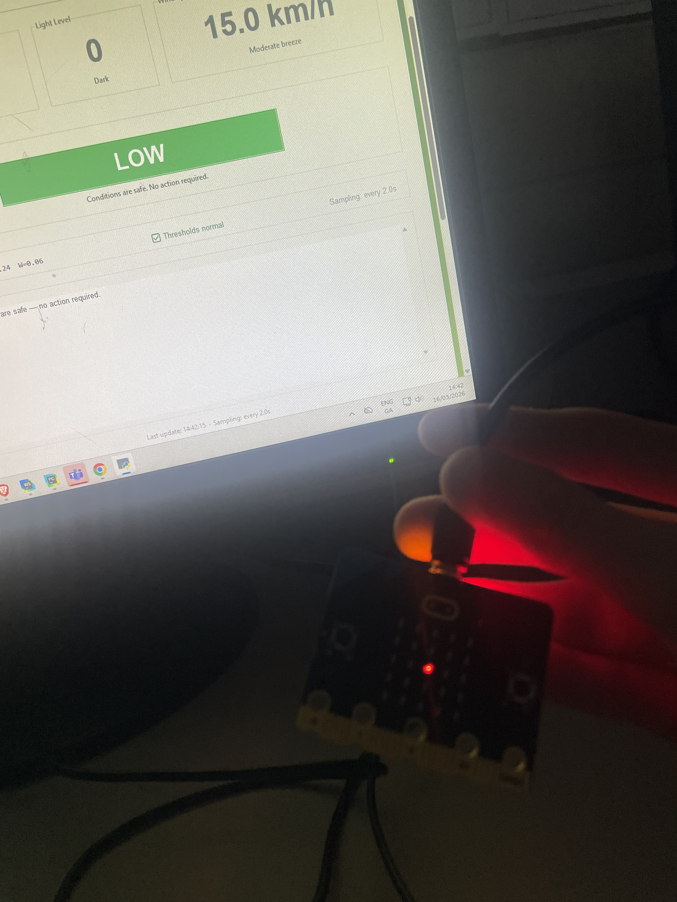

Report Video
Video Structure & Requirements Mapping
| Time | Section | Requirement shown |
|---|---|---|
| 0:22 | Introduction | Overview of Drought Wildfire Risk System (micro:bit + Python) |
| 2:13 | Basic 1 & 2 | Digital input, analogue input, auto operation, LED/sound output, CSV/JSON storage |
| 2:25 | Basic 3 | Process simulation 7 varying scenarios |
| 2:50 | Advanced 1 | Disaster risk model: WildfireModel calculates 0–100 risk score from temp, light, wind |
| 3:10 | Advanced 2 | What-if simulations: stress tests (extreme conditions) + trend tests (30-day prediction) |
| 3:45 | Advanced 3 | Adaptive feedback: Risk system with memory and threshold scaling |
Analysis of the Brief
The brief asks to build an embedded system using a micro:bit to simulate a forest-related process.
I also needed a Python model to test what-if scenarios and make predictions. The system must adapt its feedback based on received data.
How the Basic Requirements Were Met
BR1. Embedded System Design
A micro:bit collects temperature and light readings, sending data to the computer via USB.
The micro:bit receives risk updates from the Python GUI, showing patterns and playing sounds. Once connected, the system runs autonomously.
BR2. Data Collection
Sensor readings saved with timestamps in CSV files. Session information is separate.
I can review past data through the History tab in the interface.
BR3. Process Simulation
I built several scenarios to test system's behavior in difficult conditions.

How the Advanced Requirements Were Met
1. Disaster Risk Modelling
I made a wildfire risk model. It uses temperature, light, and wind speed to give a score.
The score is grouped into four levels. Since the micro:bit has no wind sensor, I simulated a wind value.
2. What-If Simulations
I created two types of what-if simulation.
Firstly, a stress test applying extreme conditions.
Secondly, a trend test simulating a longer period. Values in the Model tab can be used to test any situations.
3. Adaptive System
The system is adaptive it responds to recent readings instead of treating every reading the same.
It keeps track of the last 10 readings. It values temperature more when it's 28°C. If high-risk conditions persist, warning thresholds lower.
The model also adjusts itself depending on which sensor is changing the most. As conditions change, everything updates in real time.
Back to top